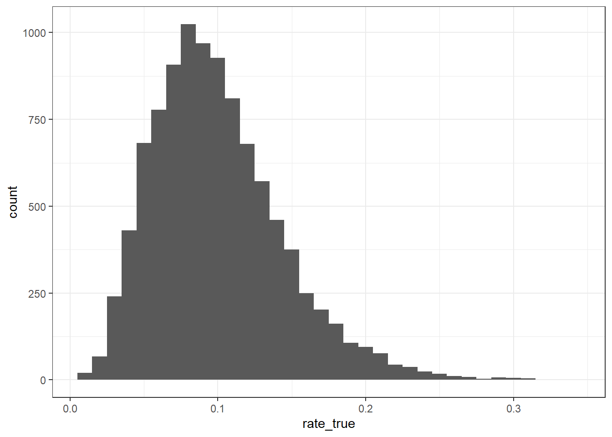
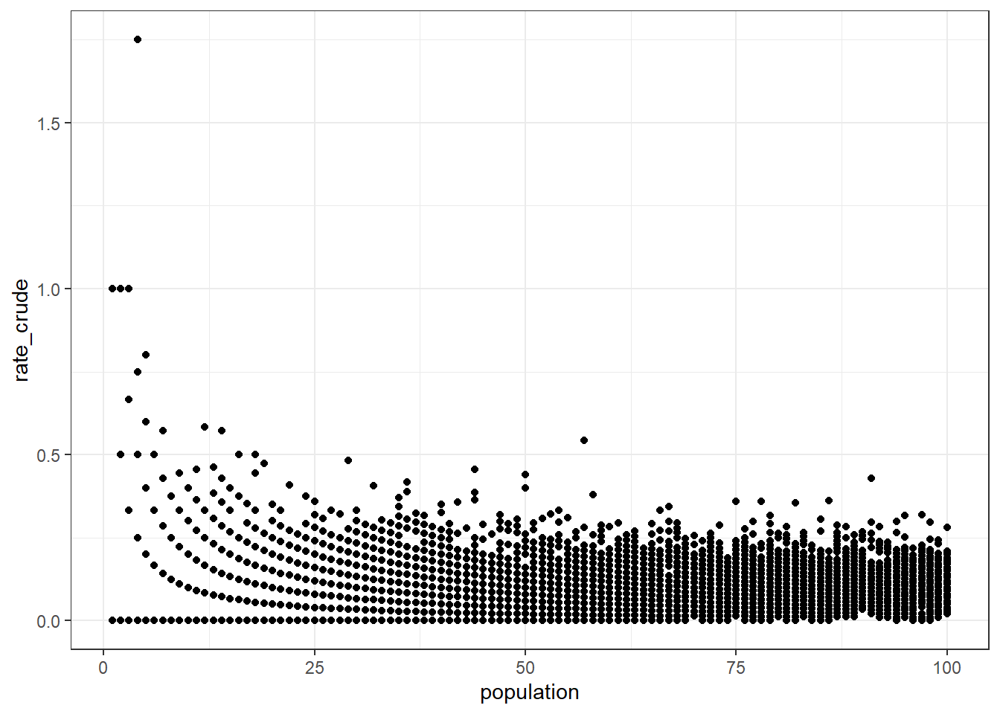
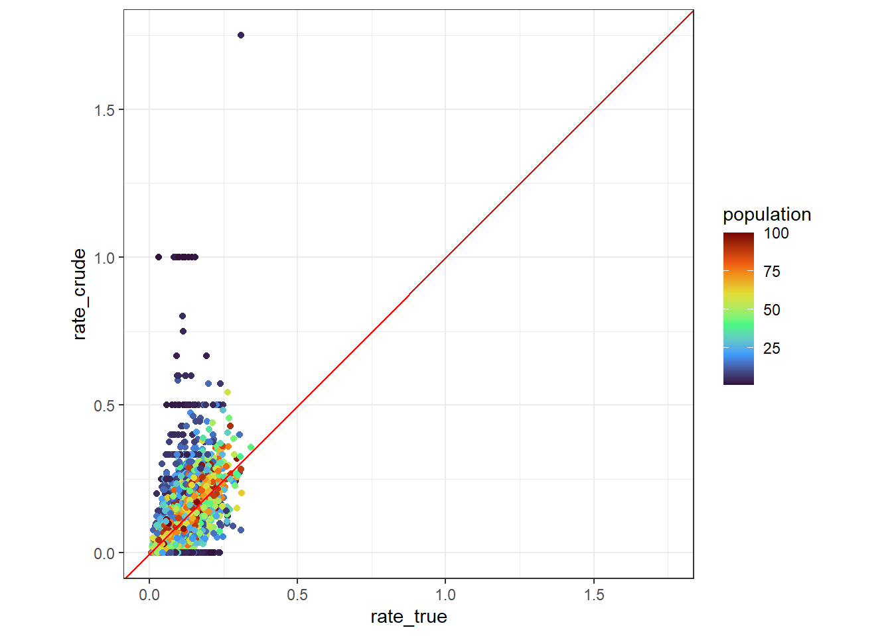
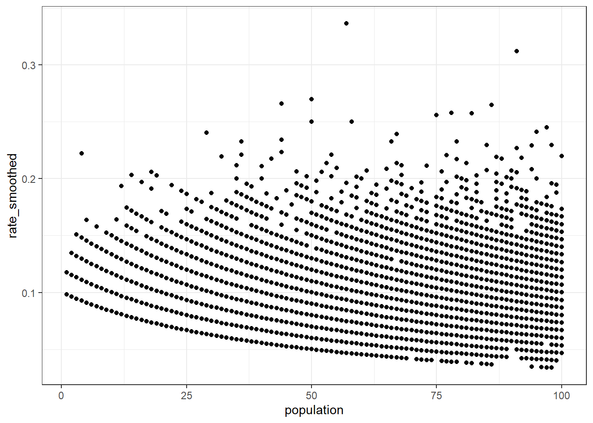
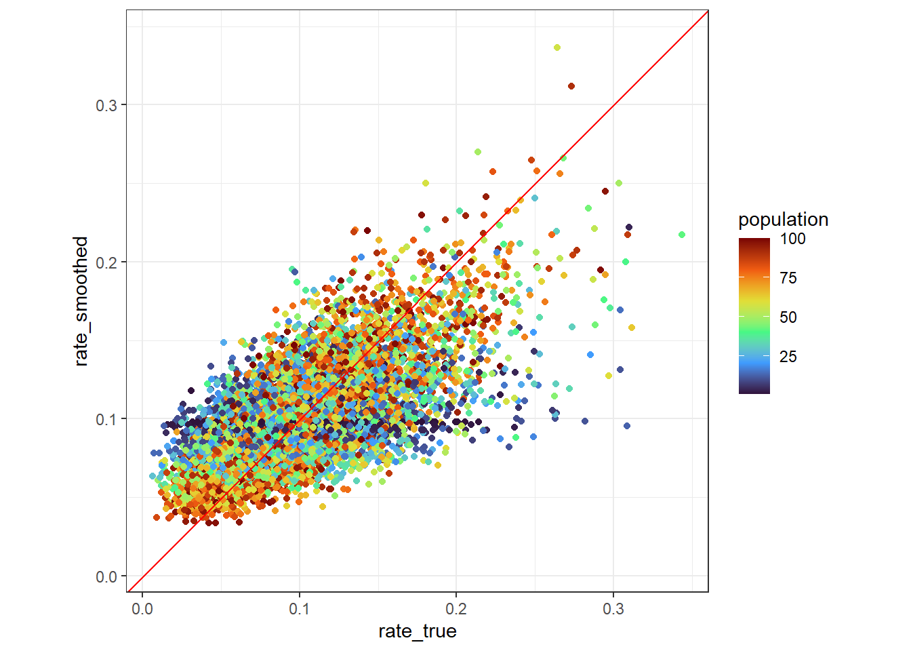

library(tidyverse)
theme_set(theme_bw())Note: This article is translated from my Japanese article.
This article explains how to deal with the small number problem that often arises when working with proportion data (values obtained by division), such as the following.
- Infection rates of a disease by region
- Number of visitors per unit time by store
- Acceptance rate for prestigious schools, by school
The small number problem refers to the phenomenon where the variability of proportion data becomes large when the observed values are small. Below, we consider how to deal with the small number problem for the Poisson distribution, which count data often follow (a similar argument can be developed for the binomial distribution). When the denominator, such as a population, is \(N\) and the true value of the proportion is \(\theta\), the numerator count data (e.g., the number of infected people) \(n\) is considered to follow the Poisson distribution below.
\[ n \sim \text{Poisson}(N \theta) \]
Furthermore, the variance of this Poisson distribution is expressed as follows.
\[ \text{Var}[n] = N \theta \]
As a naive method for estimating the (true) proportion, we can consider dividing \(n\) by \(N\). However, as shown below, the variance of the proportion obtained by this method has the property that it becomes large when \(N\) is small. This property is common to distributions such as the Poisson and binomial distributions, in which the variance (observation noise) is proportional to the expected value.
\[ \text{Var}\left[\frac{n}{N}\right] = \frac{\theta}{N} \]
This property of observation noise can become a problem when, for example, considering a ranking of schools by acceptance rate for prestigious schools. Let’s compare School A and School B below, whose total numbers of examinees differ greatly.
| School | Total number of examinees | Number of successful examinees | Acceptance rate |
|---|---|---|---|
| School A | 100 | 30 | 30 % |
| School B | 5 | 2 | 40 % |
In this case, for School B, even a small change in the number of successful examinees causes a large change in the acceptance rate, so its acceptance rate can be considered less precise than that of School A. In a situation like this, if we build a ranking of acceptance rates, schools with a small total number of examinees that happened to have many successful examinees — even though their true acceptance rate is not necessarily high — will tend to be ranked highly. This phenomenon can be problematic when, for example, predicting future acceptance rates.
Below, we describe a method for smoothing proportion data using only the observed values from data on multiple regions, stores, schools, and so on.
Smoothing using Bayes’ theorem
Assume that the count data follows a Poisson distribution, and that the true value of the proportion follows a Gamma distribution, which is the conjugate prior of the Poisson distribution.
\[ \begin{align} \theta &\sim \text{Gamma}(\alpha, \beta) \\ n \mid \theta &\sim \text{Poisson}(N \theta) \end{align} \]
Then, using Bayes’ theorem, the posterior distribution of \(\theta\) — that is, the distribution of \(\theta\) given the observed value \(n\) — is as follows.
\[ \begin{align} P(\theta \mid n) &\propto P(n \mid \theta) P(\theta) \\ &\propto (N \theta)^n \exp(-N \theta) \cdot \theta^{\alpha - 1} \exp(-\beta\theta) \\ &\propto \theta^{n + \alpha - 1} \exp[-(N + \beta)\theta] \\ \theta \mid n &\sim \text{Gamma}(n + \alpha, N + \beta) \end{align} \]
Therefore, the expected value of the posterior distribution of \(\theta\) can be expressed by the following simple formula, and by using this formula we can remove the observation noise (i.e., smooth the data).
\[ \text{E}[\theta \mid n] = \frac{n + \alpha}{N + \beta} \]
On the other hand, to perform this kind of smoothing, we need to determine the values of \(\alpha\) and \(\beta\). Below, we describe a method for estimating the prior distribution parameters \(\alpha\) and \(\beta\) from the observed values.
Estimating prior distribution parameters with empirical Bayes
Empirical Bayes is a method for estimating the parameters of the prior distribution (empirically) from the observed values. Possible approaches for estimating the prior distribution parameters with empirical Bayes include the method of moments and maximum likelihood estimation; below, we describe the approach using maximum likelihood estimation.
Before performing maximum likelihood estimation, let’s first check the distribution that \(n\) follows. \(n\) is considered to follow a mixture of the Gamma and Poisson distributions, as shown below. Normally, computing a mixture distribution requires integral calculus, but it is known that the mixture of the Gamma and Poisson distributions follows a negative binomial distribution. Therefore, we derive the probability distribution of \(n\) in advance, as follows.
\[ \begin{align} P(n) &= \int_{0}^{\infty} P(n \mid \theta) P(\theta) d\theta \\ &= \int_{0}^{\infty} \frac{1}{n!} (N \theta)^n \exp(-N \theta) \cdot \frac{\beta^{\alpha}}{\Gamma(\alpha)} \theta^{\alpha - 1} \exp(-\beta\theta) d\theta \\ &= \frac{N^n \beta^{\alpha}}{n! \Gamma(\alpha)} \int_{0}^{\infty} \theta^{n + \alpha - 1} \exp[-(N + \beta)\theta] d\theta \\ &= \frac{N^n \beta^{\alpha}}{n! \Gamma(\alpha)} \cdot \frac{\Gamma(n + \alpha)}{(N + \beta)^{n + \alpha}} \quad \text{(the integral of the Gamma distribution kernel equals the reciprocal of the normalizing constant)} \\ &= \frac{\Gamma(n + \alpha)}{\Gamma(n + 1) \Gamma(\alpha)} \left( \frac{N}{N + \beta} \right)^{n} \left( \frac{\beta}{N + \beta} \right)^\alpha \\ &= \binom{n + \alpha - 1}{n} \left( \frac{\frac{\alpha}{\beta} N}{\frac{\alpha}{\beta} N + \alpha} \right)^{n} \left( \frac{\alpha}{\frac{\alpha}{\beta} N + \alpha} \right)^{\alpha} \\ \end{align} \]
From the formula above, we can see that \(n\) follows a negative binomial distribution as shown below. Note, however, that there are several ways to parameterize the negative binomial distribution, so some care is needed. The parameterization used here is the same as Stan’s NegBinomial2.
\[ n \sim \text{NegBinomial2}(\mu, \alpha), \quad \mu = \frac{\alpha}{\beta} N \]
In this way, we find that \(n\) follows a common probability distribution called the negative binomial distribution, which means we can perform maximum likelihood estimation using existing functions provided in R. Below, using experimentally created test data, we perform maximum likelihood estimation with the glm.nb() function from R’s MASS package, and use it to smooth the proportion data.
A worked example of smoothing
Creating test data
First, we set the sample size to 10,000 and randomly generate the true values of the proportion from a Gamma distribution with \(\alpha = 5, \beta = 50\).
set.seed(1234)
# Sample size
n <- 1e4
# Proportion (true value)
alpha_true <- 5
beta_true <- 50
rate_true <- rgamma(n, shape = alpha_true, rate = beta_true)The true value of the proportion, rate_true, has the following distribution.
tibble(rate_true = rate_true) |>
ggplot(aes(rate_true)) +
geom_histogram(binwidth = 1e-2)
Next, we randomly select the population (denominator), population, from integers between 1 and 100. Then, based on the true value of the proportion, rate_true, we generate the count data (numerator), count, from a Poisson distribution, and combine these results into the data frame data.
# Population (denominator)
x <- 1:100
population <- sample(x, n, replace = TRUE)
# Count data (numerator)
count <- rpois(n, rate_true * population)
data <- tibble(
population = population,
rate_true = rate_true,
count = count
)
head(data, n = 10)Checking for the small number problem
Now, let’s use the test data to check whether the small number problem is occurring. First, we compute the naive proportion estimate, rate_crude, using division, and draw a scatter plot with population on the x-axis and rate_crude on the y-axis. As shown below, we can see a tendency for rate_crude to become large when population is small. If a similar tendency is seen in your own data, the small number problem may be occurring there as well.
data_crude <- data |>
mutate(
rate_crude = count / population
)
head(data_crude, n = 10)data_crude |>
ggplot(aes(population, rate_crude)) +
geom_point()
With ordinary data, the true value of the proportion, rate_true, is unknown, but here we can also check the relationship between rate_true and rate_crude. As shown below, drawing a scatter plot with rate_true on the x-axis and rate_crude on the y-axis shows that rate_crude tends to deviate greatly from the 45-degree line when population is small. From these results, we have confirmed that the small number problem is occurring in the test data.
data_crude |>
ggplot(aes(rate_true, rate_crude, color = population)) +
geom_point() +
geom_abline(color = "red") +
scale_color_viridis_c(option = "turbo") +
tune::coord_obs_pred()
Smoothing using the negative binomial distribution
Now, let’s perform smoothing using the negative binomial distribution. Here, we perform maximum likelihood estimation using the glm.nb() function from R’s MASS package, which is readily available. glm.nb() lets us estimate a generalized linear model in which the response variable follows a negative binomial distribution.
The parameters of the negative binomial distribution can be estimated with simple code like the following. Here, we specify log(population) as an offset term so that the expected value is proportional to population.
model <- MASS::glm.nb(
count ~ offset(log(population)),
data = data
)Next, we obtain the parameters of the Gamma distribution from model, which stores the output of glm.nb(). The Gamma distribution’s \(\alpha\) can be obtained from model$theta. We can see that the estimated value of \(\alpha\), alpha_estimated, roughly matches the true value, alpha_true.
alpha_estimated <- model$theta
alpha_true[1] 5alpha_estimated[1] 5.014545Also, the Gamma distribution’s \(\beta\) can be obtained from the relationship for \(\mu\) shown above, as follows. Although \(\mu\) is output once for each sample, we can see that the estimated values of \(\beta\), beta_estimated, are all nearly identical, and that they roughly match the true value, beta_true.
\[ \beta = \frac{a N}{\mu} \]
mu <- predict(model, type = "response")
beta_estimated <- alpha_estimated * population / mu
beta_true[1] 50all(near(beta_estimated, beta_estimated[[1]]))[1] TRUEhead(beta_estimated) 1 2 3 4 5 6
50.07359 50.07359 50.07359 50.07359 50.07359 50.07359 Finally, let’s use the estimated Gamma distribution parameters \(\alpha\) and \(\beta\) to smooth the proportion. We reproduce the smoothing formula below for reference. We compute the smoothed proportion, rate_smoothed, following this formula, and draw the same kind of plots as before. As a result, we can see that there is no tendency for the proportion to be over- or under-estimated even when population is small, confirming that the small number problem has been resolved.
\[ \frac{n + \alpha}{N + \beta} \]
data_smoothed <- data |>
mutate(
rate_smoothed = (count + alpha_estimated) / (population + beta_estimated)
)
head(data_smoothed, n = 10)data_smoothed |>
ggplot(aes(population, rate_smoothed)) +
geom_point()
data_smoothed |>
ggplot(aes(rate_true, rate_smoothed, color = population)) +
geom_point() +
geom_abline(color = "red") +
scale_color_viridis_c(option = "turbo") +
tune::coord_obs_pred()
Conclusion
In this article, we explained a smoothing method using empirical Bayes as an approach for dealing with the small number problem in proportion data. The phenomenon where the variability of proportion data becomes large when the denominator, such as the population, is small is likely to be a problem in practice as well. In such cases, one option is to exclude data with a small denominator based on some threshold, but the method described in this article has the advantage of allowing us to make use of all the data.
The glm.nb() function from the MASS package used in this article is a function for generalized linear models, so it is possible to include terms other than the denominator term, offset(log(population)), as explanatory variables. This makes it possible to reproduce situations in which \(\beta\) varies depending on factors such as regional characteristics.
Also, although we focused on the Poisson distribution, which we consider to be highly versatile, the same framework can also be applied to the binomial distribution. In the case of the binomial distribution, if we use a Beta distribution as the prior, the smoothing formula becomes as follows. In addition, since the mixture distribution in this case is the Beta-binomial distribution, parameter estimation should be relatively straightforward using existing R packages (e.g., bbmle).
\[ \frac{n + \alpha}{N + \alpha + \beta} \]